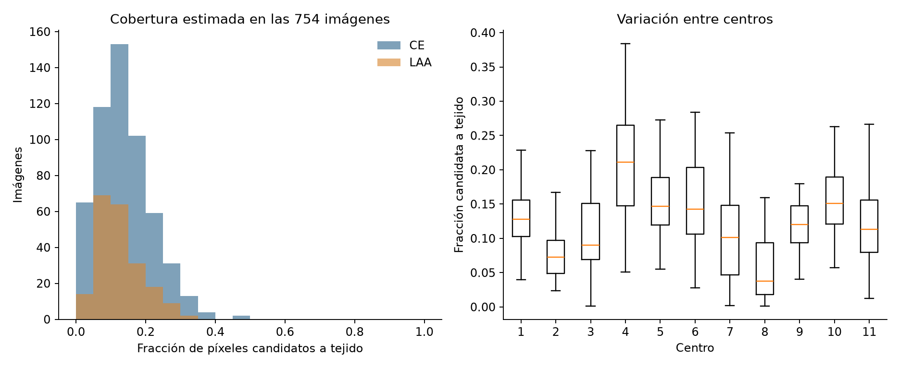
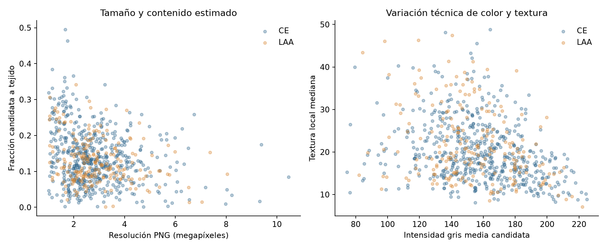
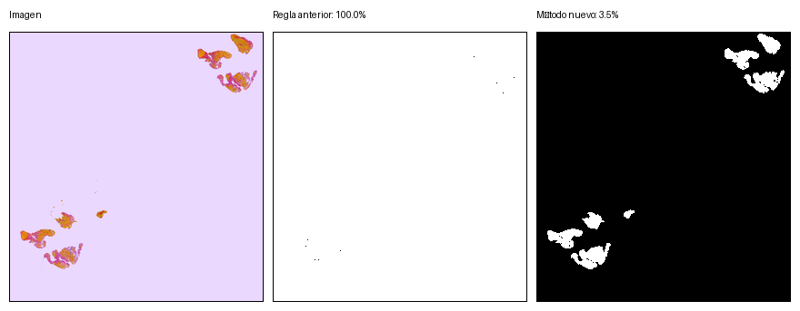
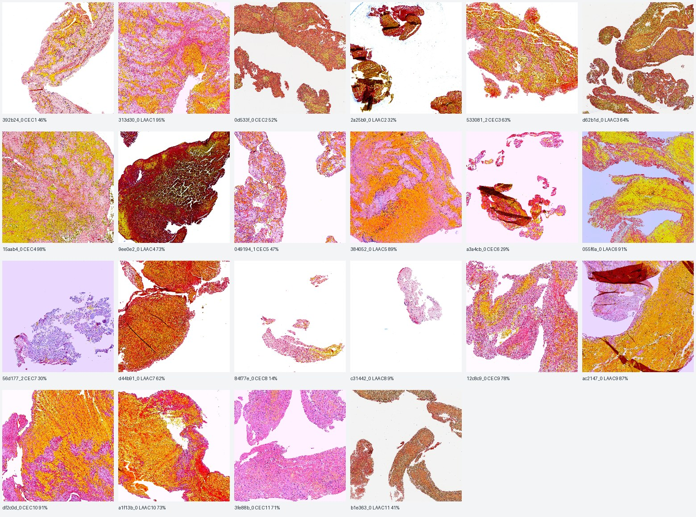
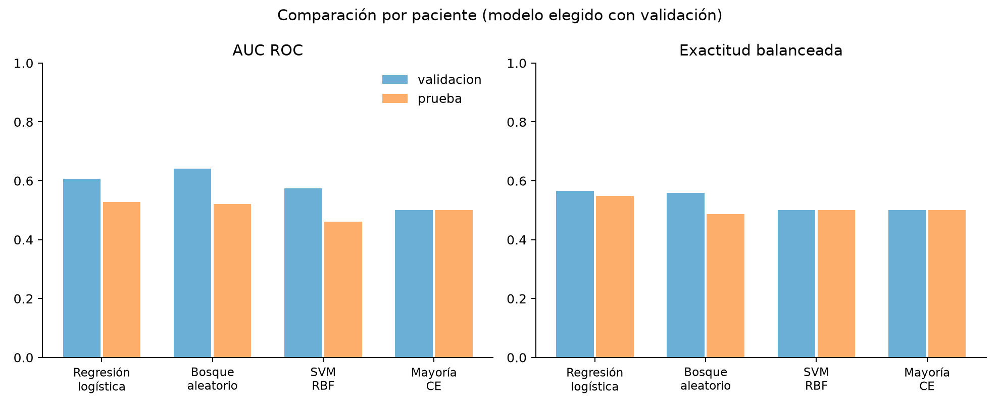
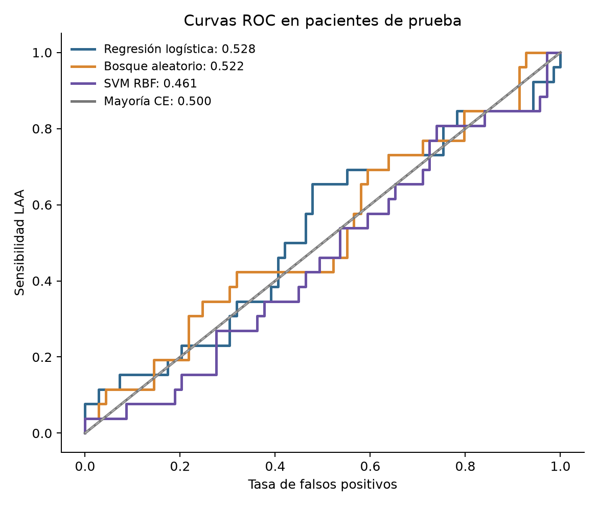
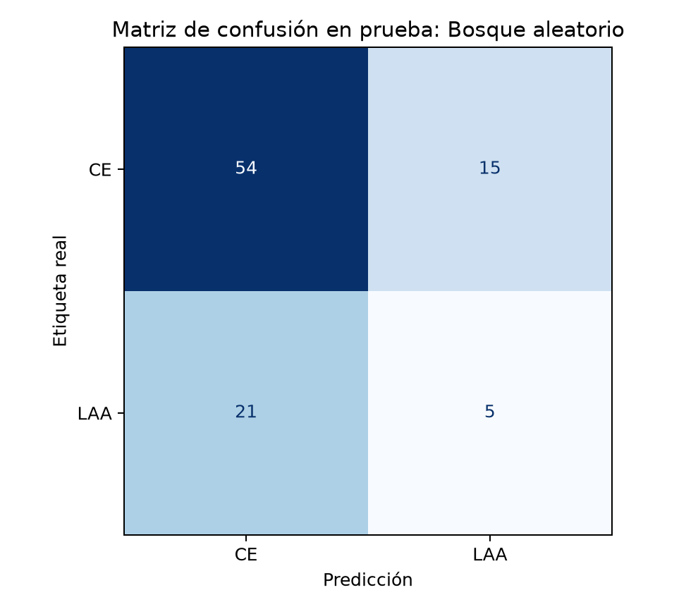
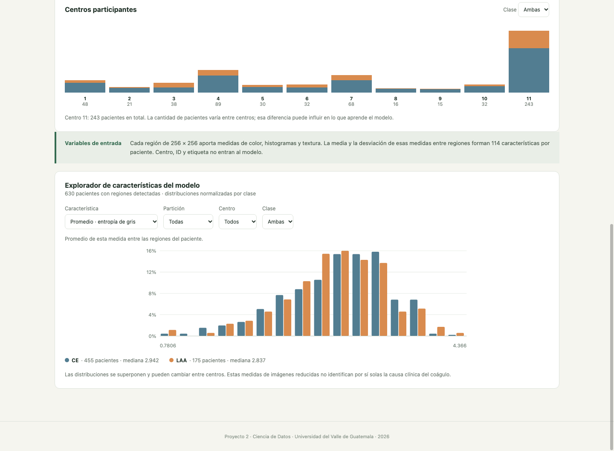
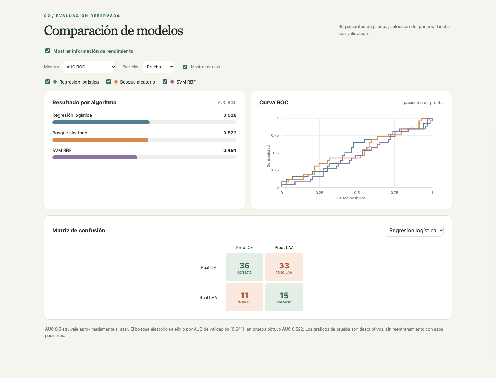
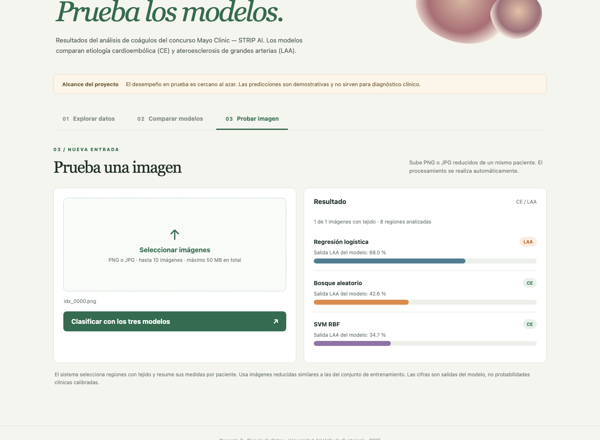

Proyecto 2 · Resultados · Tema 22
Síntesis e introducción
Este trabajo evalúa si características simples de color y textura extraídas de imágenes histológicas reducidas permiten distinguir coágulos de origen cardioembólico (CE) y por ateroesclerosis de grandes arterias (LAA). El análisis usa las etiquetas públicas de entrenamiento del reto Mayo Clinic – STRIP AI y compara tres clasificadores a nivel de paciente.
Determinar la etiología de un accidente cerebrovascular isquémico ayuda a orientar su prevención posterior. Las dos clases consideradas aquí son CE, asociado con una fuente cardíaca, y LAA, asociado con enfermedad de arterias grandes. La composición de los trombos puede variar entre etiologías, aunque sus patrones se superponen y la imagen aislada no reemplaza la evaluación médica (Boeckh-Behrens et al., 2016; Patel et al., 2023).
Las láminas de histopatología originales son de muy alta resolución. Para un proyecto realizable con recursos locales se usó una copia PNG reducida, vinculada con el CSV oficial. La reducción permite un análisis completo de los 632 pacientes, pero limita el detalle celular. La pregunta de investigación es: ¿generalizan a pacientes reservados los clasificadores basados en características globales de color y textura de regiones con tejido?
Objetivo general. Construir y evaluar un flujo reproducible de clasificación CE/LAA por paciente a partir de imágenes histológicas reducidas, con una aplicación para explorar datos y probar imágenes nuevas.
Fundamentos
Etiología y tejido. Los trombos extraídos por trombectomía pueden examinarse mediante tinciones histológicas. Entre sus componentes se encuentran eritrocitos, leucocitos, fibrina y plaquetas. Boeckh-Behrens et al. (2016) hallaron diferencias de composición entre grupos etiológicos en 145 pacientes, mientras Fitzgerald et al. (2019) observaron una asociación entre contenido plaquetario y LAA en una cohorte multicéntrica. Son asociaciones de esos estudios; este proyecto no cuantifica células ni demuestra esas diferencias en sus PNG.
Patología digital. Una lámina completa contiene regiones de tejido, fondo, bordes y artefactos. Komura e Ishikawa (2018) describen el tamaño de las imágenes, la variación de color y el trabajo por parches como retos centrales del análisis computacional. Por ello se estima una máscara de tejido antes de extraer recortes. El detector de este trabajo es un cribado técnico y carece de anotaciones manuales que permitan medir exactitud de segmentación.
Representación numérica. Cada región seleccionada se resume mediante promedios y desviaciones de RGB y HSV, histogramas de intensidad, entropía de gris, gradientes y variación laplaciana. Esas magnitudes describen apariencia y textura en píxeles, no constituyentes celulares identificados. La media y la desviación entre regiones condensan 57 descriptores regionales en 114 predictores por paciente.
La regresión logística ofrece una referencia lineal interpretable; el bosque aleatorio combina árboles para modelar relaciones no lineales; y una máquina de vectores de soporte con núcleo radial (SVM RBF) permite fronteras no lineales en características estandarizadas. La selección de hiperparámetros se hace en entrenamiento y la elección del algoritmo en validación, dejando prueba para una evaluación final.
Se reportan AUC ROC, exactitud balanceada, F1 de LAA, sensibilidad y matriz de confusión. AUC ROC evalúa la capacidad de ordenar pacientes sin fijar un único umbral; la exactitud balanceada evita que la clase CE mayoritaria domine la lectura. Los valores de corte para las etiquetas de la aplicación son 0.5 y la clase positiva es LAA.
Revisión y elección
La bibliografía indexada muestra dos familias de enfoques. Los métodos de histomics extraen medidas cuantitativas de estructura y células; las redes profundas aprenden representaciones directamente de imágenes. Sus resultados dependen de la cohorte, la tinción, el nivel de detalle, las variables clínicas añadidas y el protocolo de evaluación, por lo que sus métricas no son comparables directamente con las de este proyecto.
| Estudio | Datos y método | Aporte para este proyecto |
|---|---|---|
| Patel et al. (2023) | 53 trombos; rasgos histómicos de componentes y leucocitos; Naïve Bayes complementario. AUC de validación ≈ 0.87. | Justifica estudiar textura, pero también evidencia el valor de rasgos biológicos que aquí no se miden. |
| Lucero-Garófano et al. (2025) | 166 pacientes; redes convolucionales para segmentar y clasificar fotografías de trombos, combinadas con datos clínicos. | Muestra una alternativa profunda y multimodal; su modalidad y entradas son distintas de nuestros PNG histológicos. |
| Komura e Ishikawa (2018) | Revisión de métodos para patología digital: parches, características, SVM, bosques y redes profundas. | Respalda el trabajo por regiones y la comparación de modelos clásicos bajo límites de cómputo. |
| Fitzgerald et al. (2019) | 105 pacientes del registro STRIP; análisis automatizado de componentes histológicos. | Da contexto médico a la hipótesis de diferencias etiológicas, sin validar nuestras características RGB. |
Se eligieron regresión logística, bosque aleatorio y SVM RBF porque permiten comparar un modelo lineal, un ensamble de árboles y un modelo no lineal de margen sobre la misma tabla de 114 variables. Con 438 pacientes utilizables en entrenamiento y 8 GiB de RAM local, estos métodos permiten búsquedas de hiperparámetros reproducibles sin entrenar una red profunda sobre láminas originales. La regresión y la SVM reciben estandarización dentro de sus pipelines; el bosque no la necesita.
La elección es metodológica y no supone superioridad sobre arquitecturas profundas. Patel et al. (2023) usaron características celulares más específicas, y Lucero-Garófano et al. (2025) combinaron imágenes con datos clínicos. Por ello, un resultado inferior aquí puede deberse a información de entrada, reducción de resolución, variación entre centros o tamaño efectivo de muestra, entre otros factores.
Datos y preprocesamiento
Procedencia. Se utilizó `train.csv` oficial del concurso Mayo Clinic – STRIP AI (Mayo Clinic, 2022), verificado byte a byte contra el CSV local. Para procesar todo el conjunto en el equipo disponible se emplearon 754 PNG de una copia derivada reducida en Kaggle (Sawhney, s. f.). Los identificadores y etiquetas coinciden con las 754 filas oficiales. Se cotejó una muestra de 26 PNG con TIFF originales descargados. Los resultados del modelado se refieren a los PNG reducidos y no a las láminas TIFF completas.
Limpieza y EDA. Se validaron nombres, dimensiones, correspondencia `image_id`–`patient_id`, etiquetas CE/LAA, duplicados y ausencia de datos faltantes en metadatos. El EDA visual abarcó todas las imágenes y describió cobertura, color, textura y variación por centro. No se trataron imágenes repetidas de un paciente como casos independientes.
Máscara de tejido. Cada PNG se previsualizó a 280 px de ancho. El fondo se estimó con el color modal de píxeles uniformes del borde. Se consideró candidato a tejido un píxel con distancia RGB > 30 al fondo y desviación local de gris > 3 en ventana 5 × 5; se eliminaron componentes de menos de 8 píxeles. En 61 pares inspeccionados, la máscara excluyó amplias zonas de fondo y capturó la mayor parte del material visible. No existe una máscara experta para calcular Dice, sensibilidad o especificidad.
Recortes y características. Se recorrieron ventanas de 256 × 256 px cada 128 px; se retuvieron hasta 8 por imagen con al menos 8 % de tejido candidato y solapamiento IoU ≤ 0.25. Se obtuvieron 5,933 regiones en 750 imágenes. Las 7 imágenes con menos de 1 % de cobertura global fueron revisadas visualmente. Dos pacientes de entrenamiento no aportaron recortes; todos los de validación y prueba sí los aportaron.
Partición, modelos y herramientas
Se hizo una partición reproducible con semilla 22, aproximada a 70/15/15 y estratificada por centro y clase. Todas las imágenes de un paciente permanecen en un solo grupo. En cada grupo aparecen CE, LAA y los 11 centros; algunas combinaciones centro–clase son demasiado pequeñas para estimar desempeño por centro.
| Conjunto | Pacientes | Imágenes | CE | LAA | Pacientes con regiones |
|---|---|---|---|---|---|
| Entrenamiento | 440 | 519 | 319 | 121 | 438 |
| Validación | 97 | 121 | 69 | 28 | 97 |
| Prueba | 95 | 114 | 69 | 26 | 95 |
| Total | 632 | 754 | 457 | 175 | 630 |
En entrenamiento se realizó búsqueda en cuadrícula con cuatro pliegues estratificados, optimizando AUC ROC. Se evaluaron `C = {0.01, 0.1, 1, 10}` para regresión logística, `min_samples_leaf = {2, 5, 10}` para bosque de 300 árboles y `C = {0.1, 1, 10}` para SVM RBF. La clase LAA recibió tratamiento de desbalance mediante pesos de clase. El algoritmo ganador se fijó por mayor AUC en validación; la prueba se evaluó después una sola vez.
El procesamiento se implementó en Python 3.13 con NumPy, pandas, Pillow, SciPy, scikit-learn 1.9, Matplotlib y Flask 3.1; el código y los artefactos se versionan en GitHub. La aplicación usa HTML, CSS y JavaScript local para gráficos interactivos, sin depender de una conexión externa al ejecutarse. La ejecución de los modelos se hizo en un equipo macOS con 8 núcleos lógicos y 8 GiB de RAM, sin GPU para el ajuste.
Los tiempos de búsqueda indicados más adelante provienen de una sola ejecución de `GridSearchCV` en ese equipo; incluyen validación cruzada y reajuste del mejor modelo, y pueden variar en otra máquina. La extracción de características se ejecutó por separado y no se incluye en esos tiempos.
Datos completos
De los 632 pacientes, 457 (72.3 %) son CE y 175 (27.7 %) LAA. Por imagen hay 547 CE y 207 LAA. La mediana de píxeles candidatos a tejido fue 12.45 %; la mitad central de imágenes quedó entre 8.27 % y 17.66 %. Siete imágenes tenían menos de 1 % de cobertura global, aunque algunas contenían fragmentos localmente aprovechables.

Las medianas de cobertura por centro variaron, por ejemplo, entre 21.10 % (centro 4) y 3.74 % (centro 8). CE presentó mediana por imagen de 12.80 % y LAA de 11.27 %. Estas diferencias pueden incluir efectos de preparación, captura y distribución de pacientes; no prueban una señal etiológica.

Control de calidad
La máscara nueva se comparó con la regla de la primera fase, que consideraba tejido si gris < 230 o saturación > 0.10. En 116 imágenes la regla previa marcó al menos 25 puntos porcentuales adicionales, especialmente fondos teñidos. La mediana de cobertura nueva fue 12.45 %, frente a 14.36 % de la regla previa. El resultado respalda el cambio de cribado, aunque no certifica segmentación histológica exacta.

Con el umbral de 8 % de tejido por región se seleccionaron 4,081 recortes de entrenamiento, 958 de validación y 894 de prueba. Cuatro imágenes no aportaron regiones; solo dos pacientes completos quedaron sin recortes y ambos pertenecían a entrenamiento. La Figura 4 ilustra una muestra de recortes, que sirve para revisar si hay material visible y no para inferir composición celular.

Ajuste y comparación
Las mejores configuraciones fueron `C = 0.01` para regresión logística, `min_samples_leaf = 10` para bosque aleatorio y `C = 1` para SVM RBF. El bosque obtuvo la mayor AUC de validación (0.641), por lo que se fijó como modelo elegido antes de consultar prueba.
| Modelo | AUC valid. | AUC prueba | Bal. prueba | F1 LAA | Ajuste (s) |
|---|---|---|---|---|---|
| Regresión logística | 0.608 | 0.528 | 0.549 | 0.405 | 0.250 |
| Bosque aleatorio* | 0.641 | 0.522 | 0.487 | 0.217 | 5.198 |
| SVM RBF | 0.575 | 0.461 | 0.500 | 0.000 | 0.593 |
| Siempre CE | 0.500 | 0.500 | 0.500 | 0.000 | — |
* Elegido exclusivamente por validación. Bal. = exactitud balanceada. Tiempos de una ejecución local de búsqueda en cuadrícula; no incluyen extracción de imagen.

El bosque tardó más en ajustar que los otros métodos porque entrena 300 árboles por configuración. La diferencia de velocidad no compensa su baja generalización. La regresión obtuvo mejor exactitud balanceada y F1 en prueba, pero cambiar el ganador después de ver esos datos sesgaría la evaluación. El desempeño de prueba se informa de manera descriptiva.
Errores e incertidumbre
En prueba, el bosque elegido alcanzó AUC ROC 0.522 (intervalo bootstrap 95 % aproximado: 0.391–0.654) y exactitud balanceada 0.487 (0.401–0.579). El intervalo incluye valores compatibles con ordenamiento cercano al azar. Su exactitud total fue 62.1 %, inferior al 72.6 % de predecir siempre CE debido al desbalance de clases.


Entre los 69 pacientes CE y 26 LAA de prueba, el bosque acertó 54 CE y solo 5 LAA. Produjo 15 falsos LAA y 21 LAA omitidos; la sensibilidad LAA fue 19.2 %. La SVM clasificó todos los pacientes como CE al umbral 0.5, con F1 LAA igual a cero. La regresión logística recuperó más LAA (15 de 26), pero a costa de 33 falsos LAA.
Estas fallas pueden relacionarse con la reducción de resolución, variación de tinción y captura entre centros, y la ausencia de rasgos celulares especializados o datos clínicos. Son explicaciones plausibles, no causas demostradas por este experimento. Los trabajos de Patel et al. (2023) y Lucero-Garófano et al. (2025) emplearon información y protocolos diferentes; sus AUC no deben usarse como referencia directa de desempeño esperado para nuestro conjunto.
Exploración y evaluación
La aplicación local muestra el número de pacientes, imágenes, centros y regiones. Permite filtrar los centros por clase y explorar las 114 características realmente usadas por los modelos entre los 630 pacientes con recortes. Los filtros por clase, centro y partición actualizan las distribuciones; se advierte que su superposición no aporta diagnóstico.

Figura 8. Filtros y distribución de una característica usada por los modelos. Captura real de la aplicación local.
La sección de modelos permite seleccionar uno o varios algoritmos, comparar métricas de prueba, observar curvas ROC y cambiar la matriz de confusión. El usuario puede ocultar toda la información de rendimiento con una casilla; los gráficos se generan localmente como SVG interactivo.

Figura 9. Rendimiento por algoritmo, curvas ROC y matriz de confusión. Captura real de la aplicación local.
Entrada nueva y tecnologías
La tercera sección acepta entre una y diez imágenes PNG/JPG reducidas de un mismo paciente. Al subirlas, el servidor calcula la máscara, selecciona regiones, extrae características, agrega por paciente y ejecuta los tres modelos. Ese preprocesamiento es automático para el usuario. Si no hay suficientes regiones de tejido, se informa el problema en lugar de producir una clasificación arbitraria.

Figura 10. Ejemplo técnico con `idx_0000.png`: las salidas de los modelos pueden diferir. Es una imagen del conjunto local usada solo para demostrar el flujo, no evidencia de generalización. Captura real de la aplicación.
Flask se eligió por permitir reutilizar directamente el código Python de máscara, recortes y características, además de cargar los modelos guardados de scikit-learn. HTML y CSS ofrecen una interfaz legible; JavaScript y SVG producen filtros y gráficos sin servicio externo. La aplicación se ejecuta en `127.0.0.1:5000` y usa los CSV y artefactos versionados.
Síntesis crítica
La representación usa imágenes reducidas de una copia derivada y pierde detalle fino del TIFF original. La máscara no dispone de anotación experta y se desarrolló antes de fijar la partición, observando todo el conjunto. La prueba contiene solo 26 LAA, carece de validación externa y los intervalos de incertidumbre son amplios. Los tiempos de cómputo son de una ejecución local; no son una comparación de infraestructura.
Para avanzar se necesitarían láminas TIFF completas o recortes a resolución diagnóstica, revisión histopatológica de una muestra de máscaras, normalización de tinción ajustada solo con entrenamiento, enfoques por múltiples instancias o características celulares, y evaluación externa por centro. Cualquier mejora de umbrales o arquitectura debe validarse con una nueva partición o cohorte independiente; esta prueba ya fue observada.
Citas y procedencia
Artículos de revistas científicas indexadas consultados para el marco médico y metodológico. Formato APA 7. Los datos de Kaggle se identifican aparte como fuentes del conjunto, sin presentarlos como artículos arbitrados.
Boeckh-Behrens, T., Kleine, J. F., Zimmer, C., Neff, F., Scheipl, F., Pelisek, J., Schirmer, L., Nguyen, K., Karatas, D., & Poppert, H. (2016). Thrombus histology suggests cardioembolic cause in cryptogenic stroke. Stroke, 47(7), 1864–1871. https://doi.org/10.1161/STROKEAHA.116.013105
Fitzgerald, S., Dai, D., Wang, S., Douglas, A., Kadirvel, R., Layton, K. F., Thacker, I. C., Gounis, M. J., Chueh, J.-Y., Puri, A. S., Almekhlafi, M., Demchuk, A. M., Hanel, R. A., Sauvageau, E., Aghaebrahim, A., Yoo, A. J., Kvamme, P., Pereira, V. M., Kayan, Y., . . . Brinjikji, W. (2019). Platelet-rich emboli in cerebral large vessel occlusion are associated with a large artery atherosclerosis source. Stroke, 50(7), 1907–1910. https://doi.org/10.1161/STROKEAHA.118.024543
Komura, D., & Ishikawa, S. (2018). Machine learning methods for histopathological image analysis. Computational and Structural Biotechnology Journal, 16, 34–42. https://doi.org/10.1016/j.csbj.2018.01.001
Lucero-Garófano, Á., Aliena-Valero, A., Vielba-Gómez, I., Escudero-Martínez, I., Morales-Caba, L., Aparici-Robles, F., Tarruella Hernández, D. L., Fortea, G., Tembl, J. I., Salom, J. B., & Manjón, J. V. (2025). Automatic etiological classification of stroke thrombus digital photographs using a deep learning model. Frontiers in Neurology, 16, 1534845. https://doi.org/10.3389/fneur.2025.1534845
Patel, T. R., Santo, B. A., Jenkins, T. D., Waqas, M., Monteiro, A., Baig, A., Levy, E. I., Davies, J. M., Snyder, K. V., Siddiqui, A. H., Kolega, J., Tomaszewski, J., & Tutino, V. M. (2023). Biologically informed clot histomics are predictive of acute ischemic stroke etiology. Stroke: Vascular and Interventional Neurology, 3(2), e000536. https://doi.org/10.1161/SVIN.122.000536
Fuentes de datos
Mayo Clinic. (2022). Mayo Clinic – STRIP AI [Conjunto de datos y competencia]. Kaggle. https://www.kaggle.com/competitions/mayo-clinic-strip-ai/data
Sawhney, S. (s. f.). Mayo resized images [Copia derivada PNG]. Kaggle. https://www.kaggle.com/datasets/saurabhsawhney/mayo-resized-images